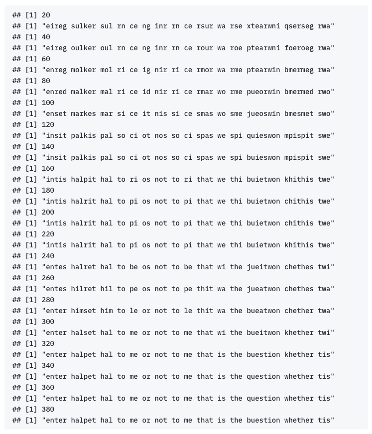

enter hamlet ham to be or not to be that is the question whe ther tis nobler in
the mind to suffer the slings and arrows of outrageous fortune or to take arms against
a sea of troubles and by opposing end.Cracking the Code
A real example of problem solving with data
In this section, we discuss a cryptography problem that Prof. Persi Diaconis introduced in his paper. He used this example to introduce the Markov Chain Monte Carlo (MCMC) approach. This is a beautiful example not only for introducing MCMC but also a nice example to demonstrate the “routine” of using data to solve real problems. We can also review some basic probability knowledge and concepts. In addition, it is a good programming exercise, and you may try to implement it by yourself.
The story takes place in a prison in the United States. One day, the police officer found many strange symbols on a piece of paper, see figure below. It turned out that some prisoners wanted to exchange secret information through ciphertext. The officer first visited a linguist and was told that the cipher text might be a simple substitution cipher. The linguists can’t understand the cipher either but recommend seeking help from statisticians.

Problem Understanding
First of all, let’s understand what is a substitution cipher. It is a very simple cipher using fixed symbols to replace letters, punctuation marks, numbers, and spaces. Then the key of this kind of cipher is a map from the symbol space to the letter space.
\[ f: \{ \text{code space} \} \to \{ \text{alphabet} \} \]
We use the letter itself instead of symbols to simplify the problem and make it easier to express. For example, suppose the key is
\[ f: \{ \text{d} \to \text{a}, \text{a} \to \text{t}, \text{t} \to \text{d}, \dots \} \]
According to this key, the regular English word “data” is encrypted as “atdt”. Next, same as the original paper, we take a small piece from the well-known section of Shakespeare’s Hamlet as a simple example.
We randomly generate a substitution cipher:
tuntvmfeprtnmfepmnsmgtmsvmusnmnsmgtmnfenmjbmnftmatbnjsumdftnftvmnjbmusgrtv
mjumnftmpjuymnsmbiitvmnftmbrjuhbmeuymevvsdbmsims nvehts bmisvn
utmsvmnsmnextmevpb mehejubnmembtemsimnvs g rtbmeuymgwmskksbjuhmtuyOne can apply inverse mapping to translate the cipher and retrieve the secret information. In other words, one can understand the cipher if holds the key. Thus the problem is to find the key (mapping \(f\)). Well, it is also obviously not such an easy task. The size of the symbol space is too big to simply apply a brute force algorithm to search the key. The size of the symbol space is \(27\) even though we only consider letters in lowercase and space. In such a case, the total number of possible keys is \(27! = 1.08\times 10^{28}\). So we have to figure out a smart approach that takes some prior information into account to search the key! The prior information leads to our assumptions and the model on top of it.
Model and Assumption
For a natural language, we believe the alphabetical order should obey certain rules. For example, the probability of the letter ‘a’ being connected by the letter ‘b’ must be greater than that of the letter ‘x’. Now we translate this prior knowledge as an assumption. To do so, we view the sequence of letters in a text as a stochastic process. There could be \(27\) possible values for each time point (or position). We call the possible values (letters) as state. Then we can assume that a sequence of letters in a text should satisfy the first-order Markov properties.
\[ \Pr(x_t | x_{1}, x_{2}, \dots, x_{t-1}) = \Pr(x_t | x_{t-1}) \]
where \(x_i\) present the state at the \(t\)-th position in a text. In other words, the letter in \(t\)-th position only depends on the letter in the previous position. This assumption implies two things. First, the transition between two letters in a text should satisfy some transition probabilities and this can be summarized in a transition probability matrix,
\[ \begin{pmatrix} & a & d & t & \dots \\ a & p_{11} & p_{12} & p_{13} & \dots \\ d & p_{21} & p_{22} & p_{23} & \dots \\ t & p_{31} & p_{32} & p_{33} & \dots \\ \vdots & \vdots & \vdots & \vdots & \ddots \end{pmatrix} \]
The second thing is the likelihood of a text can be factorized as the product of the corresponding transition probabilities. For example, the likelihood of ‘data’ is
\[ \ell('data') = \Pr(d\to a)\Pr(a\to t)\Pr(t\to a) = p_{21}p_{13}p_{31}, \]
but the likelihood of ‘atdt’ is
\[ \ell('atdt') = \Pr(a\to t)\Pr(t\to d)\Pr(d\to t) = p_{13}p_{32}p_{23}. \]
Since ‘atdt’ is much weirder than ‘data’, the likelihood of the former must be lower than the latter, \(\ell('atdt') < \ell('data').\) Given the two thoughts, we can summarize our problem as an optimization problem and present it in a mathematical language,
\[ \max_{f} \ell( f( \text{Cipher}) ) \]
So the problem is to find a key \(f\) that maximizes the likelihood of the translated text, \(f(\text{Cipher})\). Great! We have obtained a promising idea, however, it is still not clear how to search for the key in a smart way. Before we discuss the final solution, we need to first discuss one practical issue, that is how to obtain the transition probability matrix.
Model Estimation
At this stage, we can finally invite our protagonist, data. So far, we have a probability model, the first-order Markov chain model. It is a parametric model and the parameter is the transition probability matrix. To be a little bit mysterious, we can’t know the real model coefficients set by God, we can only try to figure out his mind through the data generated by the model he created. Seriously speaking, we need to use the data to estimate the parameters of the model. For this problem, we can download classical books in English and that is our data. More specifically, we can count the frequencies of all \(27^2\) different transitions in a book. Then normalize all the frequencies by the total number of transitions as the estimation of the transition probabilities. You can see part of the estimation of the transition probability matrix bellow
\[ \begin{matrix} & A & B & C & D & E & F & G & H & I & \dots \\ A & 0.000 & 0.017 & 0.034 & 0.055 & 0.001 & 0.008 & 0.017 & 0.002 & 0.043 & \dots \\ B & 0.093 & 0.007 & 0.000 & 0.000 & 0.328 & 0.000 & 0.000 & 0.000 & 0.029 & \dots \\ C & 0.110 & 0.000 & 0.017 & 0.000 & 0.215 & 0.000 & 0.000 & 0.184 & 0.042 & \dots \\ D & 0.021 & 0.000 & 0.000 & 0.011 & 0.116 & 0.001 & 0.004 & 0.000 & 0.066 & \dots \\ E & 0.042 & 0.001 & 0.017 & 0.091 & 0.026 & 0.010 & 0.007 & 0.002 & 0.011 & \dots \\ F & 0.071 & 0.001 & 0.000 & 0.000 & 0.084 & 0.052 & 0.000 & 0.000 & 0.085 & \dots \\ G & 0.066 & 0.000 & 0.000 & 0.001 & 0.115 & 0.000 & 0.009 & 0.117 & 0.049 & \dots \\ H & 0.164 & 0.000 & 0.000 & 0.000 & 0.450 & 0.000 & 0.000 & 0.000 & 0.156 & \dots \\ I & 0.017 & 0.008 & 0.049 & 0.050 & 0.049 & 0.022 & 0.025 & 0.000 & 0.001 & \dots \\ \vdots & \vdots & \vdots & \vdots & \vdots & \vdots & \vdots & \vdots & \vdots & \vdots & \ddots \end{matrix} \]
Once the transition probability is ready, then we can use it to evaluate the likelihood of a text. For example, the likelihood of the original text and the cipher is \(-458.26\) and respectively.
Inference
Great! Now we can discuss how to find the optimal key. Imagine that all the \(27!\) possible keys form a huge solutions space. Similar to most optimization algorithms, we can start from a certain initial value, and then gradually approach the optimal solution through some iterative mechanism. (In fact, this is not very accurate, but we can understand it this way first, and later I will explain what our algorithm is doing.) Firstly, we randomly generate an initial key, for example
\[ f^{(0)}: \{ \text{a} \to \text{f}, \text{b} \to \text{g}, \text{c} \to \text{m}, \dots \}, \]
and evaluate the likelihood of this key \(\ell(f^{(0)}(cipher))\). Then we randomly move a small step to a new key \(f^{(1)}\) by making a random transposition of the values \(f^{(0)}\) assigned to two symbols, for example,
\[ f^{(1)}: \{ \text{a} \to \text{m}, \text{b} \to \text{g}, \text{c} \to \text{f}, \dots \} \]
Is the new \(f^{(1)}\) key a good proposal? We can calculate its likelihood value and compare it with the previous key. The simple situation is that if the likelihood value of the new key is higher than the previous one, \(\ell(f^{(1)}) > \ell(f^{(0)})\), we should keep the new key. The interesting question is what if the new key is worse? Simply discard this new key? It seems to be a good way, but there is a risk of falling into the local area and finally missing the optimal key. What is the good way then? There are two situations. If the likelihood value of the new key is much lower than the previous key, then we should be inclined to abandon it; however, if the likelihood values of the two keys are almost the same, then we should tend to keep it. This plan sounds more reasonable, but the question is how exactly realize ‘tend to’? We can calculate the ratio, \(\frac{ \ell(f^{(t)}) }{ \ell( f^{(t-1)}}\). This value, between 0 and 1, can be regarded as a probability that an action will be executed. If we generate a Bernoulli-distributed random number with this probability, and use it to determine whether to keep the new key, then the above operation can be achieved. We summarize this approach in the following algorithm
Initialize the key f(0)
for(i in 1:R){
Step 1. Evaluate the likelihood value of f(t-1), likelihood(f(t-1))
Step 2. Propose a new key f(t) by making a random transposition of the values of f(t-1) assigned to two letters.
Step 3. Make decision, either keep the new key or stay with the old key
if(likelihood(f(t)) > likelihood(f(t-1))){
keep f(t)
} else{
generate u ~ Ber(f(t)/f(t-1))
if(u == 1){
keep f(t)
} else{
stay at f(t-1)
}
}
}The performance of our algorithm can be glimpsed from the following R outputs.
